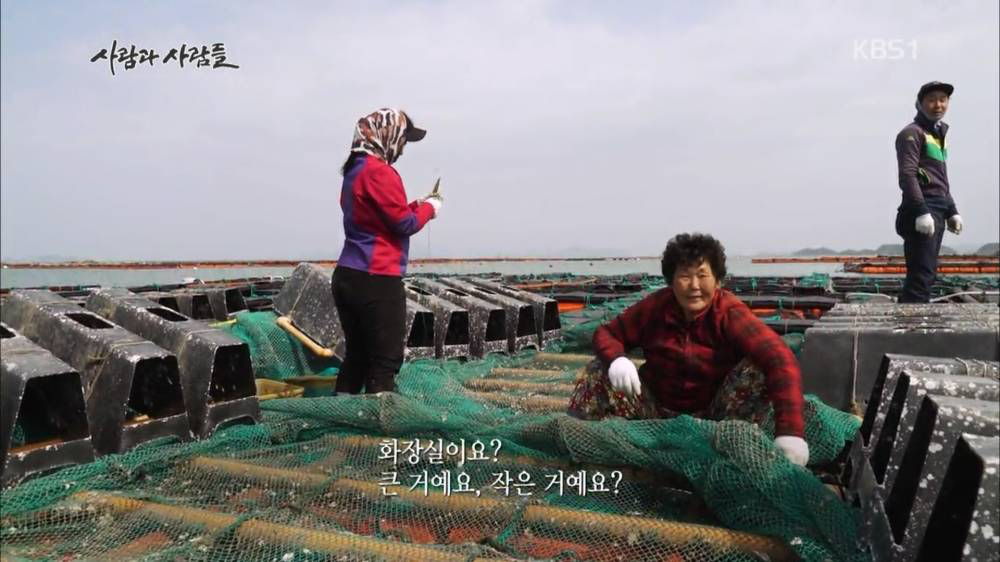
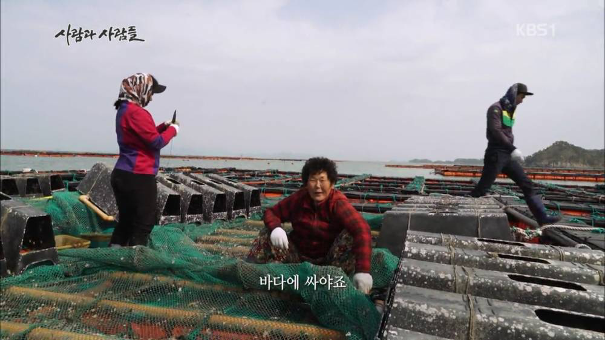
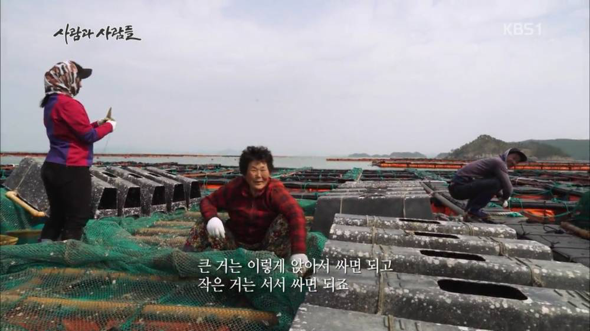

방송을 못봤는데 물론 농담이겠지만,
진짜로 배나 양식장이나
가끔 소형배타고 낚시하는 사람이나
바다위에 좌대 낚시 등등
신호 씨게오면 뭐 우쨈?
바다 근처에 오수가 들어가서 굴 노로바이러스가 문제인거야
진짜 위에서 싸서 문제인거야



방송을 못봤는데 물론 농담이겠지만,
진짜로 배나 양식장이나
가끔 소형배타고 낚시하는 사람이나
바다위에 좌대 낚시 등등
신호 씨게오면 뭐 우쨈?
바다 근처에 오수가 들어가서 굴 노로바이러스가 문제인거야
진짜 위에서 싸서 문제인거야
노로바이러스는 인간의 장내에서만 증식하고, 어패류나 물고기 내에서는 증식을 못함
그래서 사람 분변만 문제라고 하는거
저거 진짜다
벌교였나 고흥은 썰물때 뻘밭 걸어가서 캐오는거라 저런거 신경쓰이면 그나마 괜찮을겨
아님 마트에서 가열조리용 말고 생식용이었나 뭔 표시 있는데 그거 사면 안전할거임
필터를 설치해서 장시간에 분해시키거나 하는 방식의 화장실은 설치 못하나?
실제로 해상 화장실을 설치하고 있는데, 일단 바다에 화장실을 설치한다는것 자체가 비싸서, 아직 없는곳들이 많음..
돈
야가다 화장실, 흡연실 처럼 있어도 안 가는 경우는 못 막긴 해
근데 사람이 직접 바다에 똥싸는게 문제인거임?
물고기들도 어차피 똥싸고
바다에서 직접 싸는게 아니어도 똥싸면 어차피 흘러흘러 바다로 가잖아?
근데 그게 양식장 옆이면 문제가 됨
굴 양식장 위에서 싸니까 문제인거
농축된 오폐수가 관을타고 양식장 근처 바다로 유출되는 게 문제임
그래서 노로바이러스가 한국 굴에 많은거야
일단 사람이 싸는 똥은 대부분 하수처리장에서 정화를 해서 내보내서, 노로바이러스가 없는것도 있고,
노로바이러스는 인간 장내에서만 증식하는거라 물고기나 어패류의 분변은 원인이 아님
아구구, 할미 똥맛이 워뗘? 맛나제?
굴맘
저게 지금 농담으로 보이냐. 사실이다
할매할배 똥오줌이 츅츅히 묻어있는데 싱싱한 굴~~!
근데 사실 양식장이란것도 굴이 싼 똥오줌 범벅이지 않나